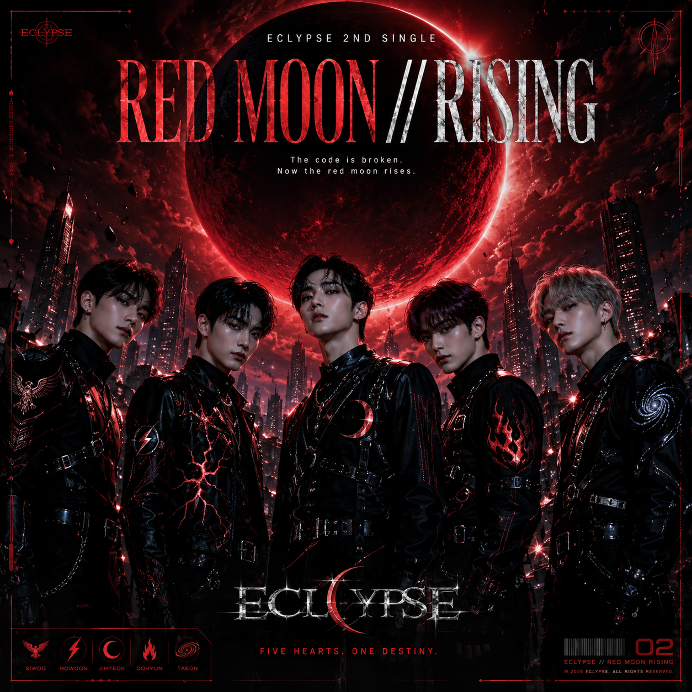

02
ECLYPSE · 2ND SINGLE · 2026.07.18
RED MOON // RISING
“FIVE HEARTS. ONE DESTINY.”
赤い月と崩壊した近未来都市を舞台に、壊れたコードの先で5人の運命が再び動き始めるECLYPSE第2章。
Music Label / Creative Music Project
MUSIC LABEL
音楽から、
新しい物語が始まる。
A new story begins with music.
ジャンルや国境を越え、独自の世界観を持つアーティストと作品を届けます。
01 / Latest release
The code is broken.
Now the red moon rises.

ECLYPSE · 2ND SINGLE · 2026.07.18
“FIVE HEARTS. ONE DESTINY.”
赤い月と崩壊した近未来都市を舞台に、壊れたコードの先で5人の運命が再び動き始めるECLYPSE第2章。
02 / New artist
A SUZUKA Artist
光と闇が交わる瞬間、5つの運命が動き始める。
ダークで幻想的な世界観と、力強いボーカル、鋭いラップ、完成度の高いダンスパフォーマンスを融合させた5人組男性K-POPグループ。
03 / Artists
音楽レーベルSUZUKAに所属する、
それぞれの物語を持つアーティストたち。
光と闇が交わる瞬間、5つの運命が動き始める。
View profile ↗この声は、守るためにある。
View profile ↗
恋するすべての瞬間を、歌にする。
View profile ↗04 / Releases
SUZUKA所属アーティストの音楽作品。
05 / About SUZUKA
SUZUKAは、ジャンルや国境にとらわれず、独自の世界観を持つアーティストと音楽作品を発信する音楽レーベルです。
J-POP、K-POP、ダークポップ、ロック、バラードなど、さまざまな音楽表現を通して、アーティストごとに異なる物語と世界を届けます。
ABOUT SUZUKA06 / News
デビュー、リリース、アーティスト情報。
07 / Official YouTube